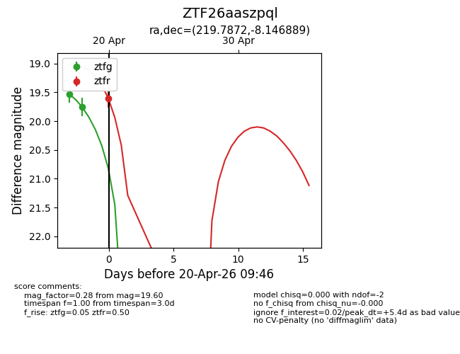
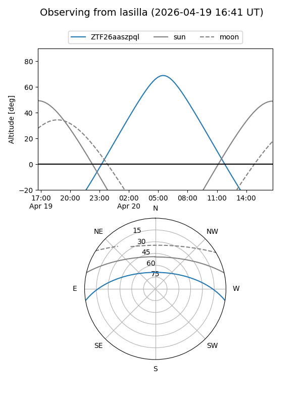
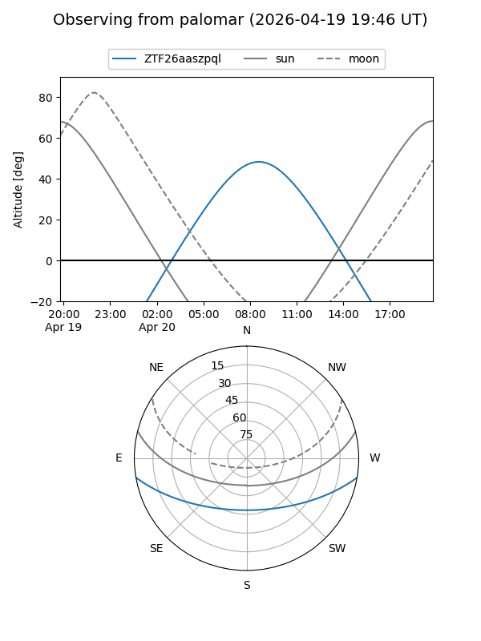
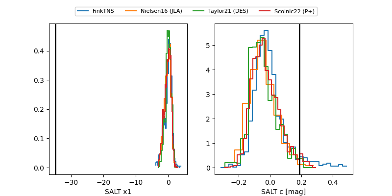

ZTF26aaszpql
Target ZTF26aaszpql at 2026-04-20 10:00
Aliases and brokers:
FINK: link
Lasair: link
ALeRCE: link
alt names
ZTF26aaszpql (ztf,fink_ztf)
Coordinates:
equatorial (ra, dec) = 219.7872,-8.14689
equatorial (HMS+DMS) = 14:39:08.92,-08:08:48.80
galactic (l, b) = (343.2345,+46.12623)
Flags:
Photometry:
last ztfg=19.75, ztfr=19.60
2 ztfg, 1 ztfr detections
Lightcurve

Visibility


Additional plots
